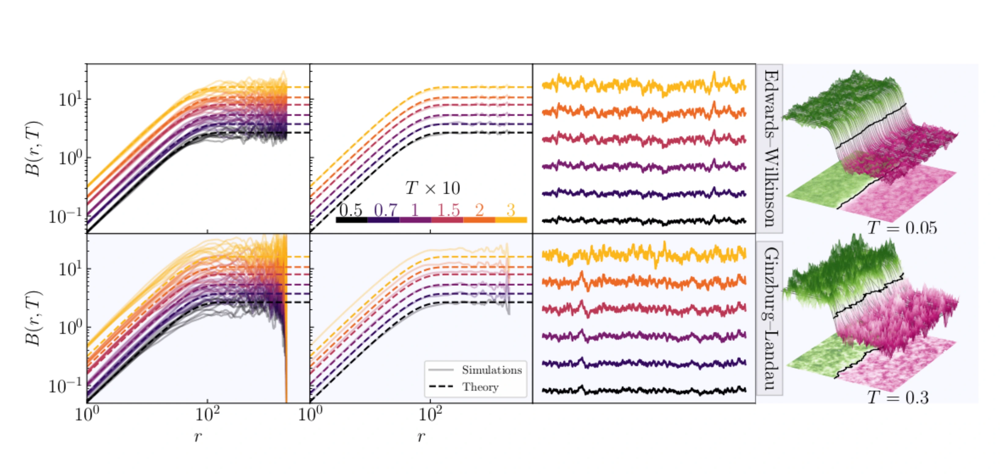
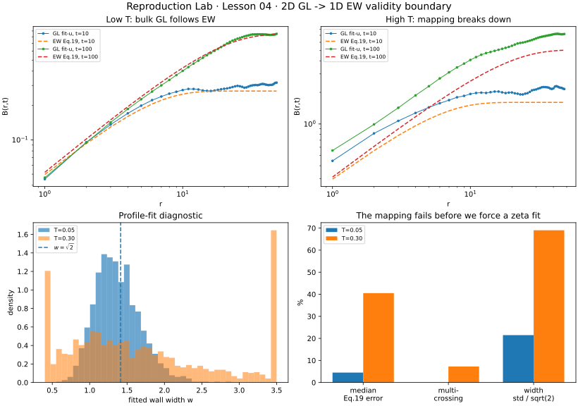

最重要的不只是“映射成功”：还要知道什么时候该停止把 bulk wall 当 elastic line
Caballero 2020 的真正价值，不只是证明 2D Ginzburg–Landau 可以降成 1D Edwards–Wilkinson。论文还明确测试了这个 reduction 的适用边界：低温时两种描述吻合；温度升高、bulk fluctuation 变强后，soliton ansatz 与 single-valued interface picture 会逐渐失效。这一课就复现“通过 + 失败”两边。
0 · 原论文 Fig.3 vs 我们的 boundary thumbnail

作者固定 t=103，扫描 T=0.05,0.07,0.1,0.15,0.2,0.3。EW 仍按 Eq.19；2D GL 在低温与理论接近，但论文正文指出 T 大于约 0.15 后开始出现明显偏离。

只取 T=0.05 与 T=0.30、t=10 与 100。左上：低温 GL extracted-wall roughness 对 EW Eq.19；右上：高温偏离；下排同时看 fitted wall width 与多 crossing / error diagnostics。
1 · 先修正 Lesson 02 的一个教学简化：finite T 不能只找 zero crossing
Lesson 02 在 T=0 的 clean wall 上用 φ=0 crossing 很合适，因为每一列只有一个干净 crossing。但论文在 finite T 下采用更严格的 estimator：对固定 y,t 的整个 transverse profile φ(x,y,t) 拟合 soliton，并把 {φ₀,w,u(y)} 都作为 fitting parameters。
pars, _ = curve_fit(
soliton, x_window, phi_column,
p0=(1.0, sqrt(2), u_zero),
bounds=((0.5,0.4,u_zero-2),
(1.5,3.5,u_zero+2))
)
A, w, u = pars2 · 论文 protocol 与我们哪里相同、哪里缩小？
| 项目 | Caballero 2020 | 本课 | 解释 |
|---|---|---|---|
| GL 参数 | α=δ=γ=η=1，h=0 | 相同 | 不改物理模型 |
| boundary | y periodic；x Dirichlet | 相同 | 锁住单一 domain wall |
| mesh | Δx=Δy=1 | 相同 | 按论文离散尺度 |
| time step | semi-implicit Euler，Δt=0.1 | Δt=0.1；linear Laplacian implicit | 保持同一量级；实现细节不是逐行复制论文代码 |
| system size | 256×4096 | 64×128 | 快速 thumbnail |
| temperature | 0.05…0.30 | 0.05 与 0.30 | 先取两端测试 validity boundary |
| time | Fig.3: t=1000 | t=10,100 | 先做即时可验收版 |
| wall estimator | fit {φ₀,w,u(y)} | 相同思路 | zero crossing 只初始化 fit |
3 · 2D thermal noise：这次真的回到 bulk FDT
GL Langevin 方程的论文噪声满足：
因此二维 cell 面积 ΔxΔy、时间步 Δt 下，直接加到 φ update 的 stochastic increment 是：
4 · 低温 T=0.05：mapping 必须先过
| time | Eq.19 median error | RMS error | mean fitted φ₀ | mean fitted w |
|---|---|---|---|---|
| t=10 | 7.67% | 7.57% | 0.9879 | 1.3738 |
| t=100 | 4.49% | 4.36% | 0.9870 | 1.3740 |
论文在 T=0.05 的 fit diagnostics 报告 mean φ₀≈0.99、mean w≈1.38，而 clean equilibrium 值是 φ₀=1、w=√2≈1.414。我们的 thumbnail 均值已经落在同一位置；但我们没有声称复现论文的标准差，因为系统尺寸、realization 数与 integrator implementation 都不同。
5 · 高温 T=0.30：这次“失败”才是应该出现的答案
| time | Eq.19 median error | mean fitted w | width std | multi-cross columns |
|---|---|---|---|---|
| t=10 | 26.52% | 1.6664 | 0.9806 | 5.47% |
| t=100 | 40.51% | 1.7018 | 0.9760 | 7.23% |
论文的物理解释也是这一方向：GL→EW reduction 建立在 low-noise / solitonic ansatz 上；对于 α=δ=γ=η=1，特征温度 T*≈1，随着 T 增大，bulk fluctuations 增强；论文 Fig.3 中 T>0.15 已观察到系统性偏离。
6 · 这节真正教给你的不是 Caballero，而是一个 universality gate
先验 mapping
先证明 bulk field 能稳定压成单值 u(y)，再调用 elastic-interface theory。
同时验 geometry
B(r) 对上还不够；profile width、fit residual、crossing topology 也要一起正常。
失败要降级 claim
mapping gate 失败时，正确语言是 crossover / bulk-interface breakdown，而不是强给 universality label。
7 · 完整脚本与 hard gates
打开 Lesson 04 Python 脚本 → 依赖 NumPy + SciPy + Matplotlib；普通 CPU 约几十秒。
# low T must pass assert low[t]["median_rel"] < 0.10 assert low[100]["multi_cross"] < 0.01 # high T is deliberately NOT forced to pass assert high[100]["median_rel"] > 0.30 assert high[100]["W_std"] > 2*low[100]["W_std"] assert high[100]["multi_cross"] > 0.03
8 · 下一课：disorder 不只是“往方程里加随机数”
Caballero 的 Sec.IV 从 bulk random-bond disorder 出发，推导出 interface 看到的是一个具有有限 u-correlation length 的 pinning force。下一课最适合先复现论文 Fig.4：从理论 Γ(u) 生成很多 Fp(u,y)，直接检查 sample correlator 是否回到 Γ(u)。这一步算力很小，却是进入 quenched-disorder / depinning 前非常强的 gold test。